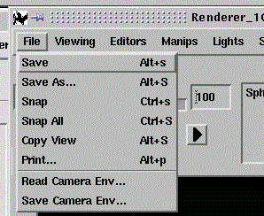

The File option provides the following functions(see above):

| Format of the snapshot files is .tiff (changed with Rel. 5.2.3). Creates an error dialog if offscreen rendering is not possible due to low colordepth. Offscreen rendering requires at least a 24bit true color. Same applies to Snap all. |
| Snap all can only be selected if the map contains timesteps, e. g. if an animated particle trace is generated. Format of snapshot files see Snap. |
You can use these snapshots to generate a simple movie (see example for SGI).
| Copy View can only be selected if an object has been selected: switch to pick mode and click on the object in the viewer area, or click on the name of the object in the Geometry Objects list before you try to use Copy View! |
| You can also use Copy View in the Viewer Popup Menu (menu COVISE Renderer, option 'Functions', available by clicking with the right mouse button on the viewer area) |